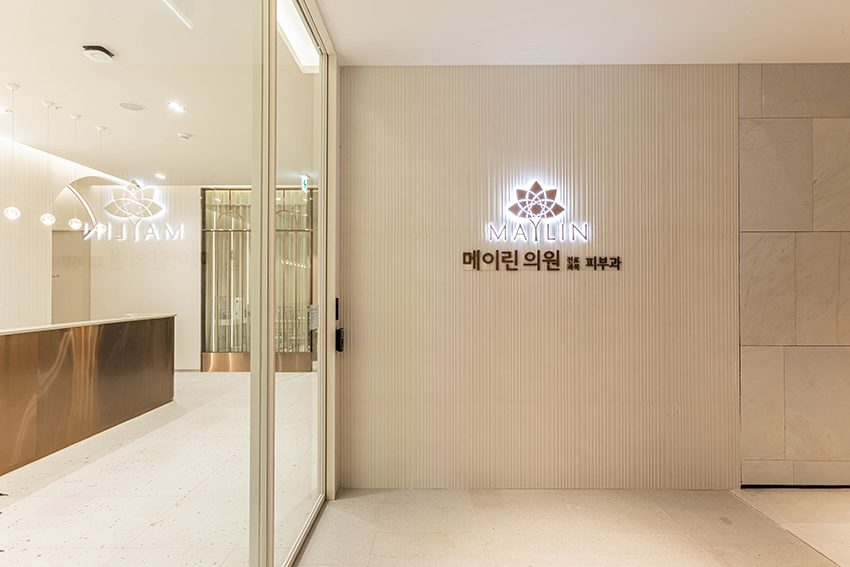
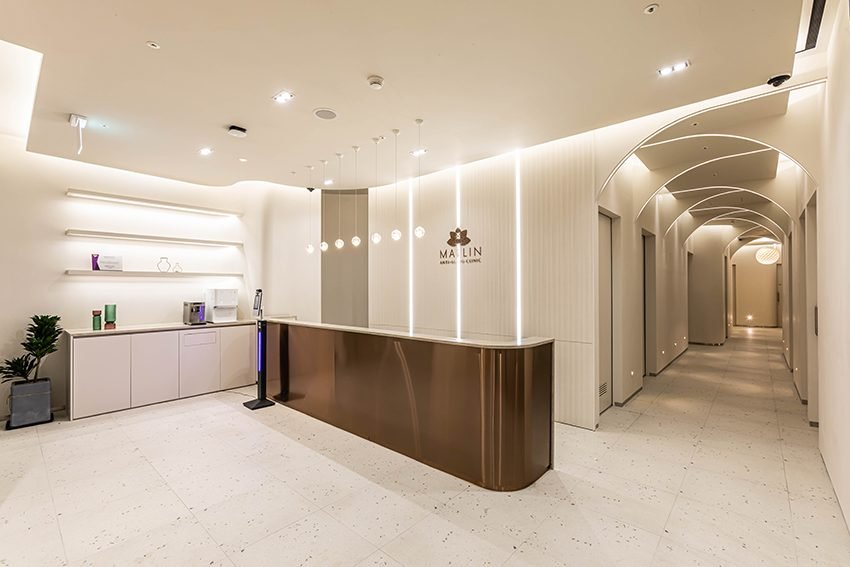
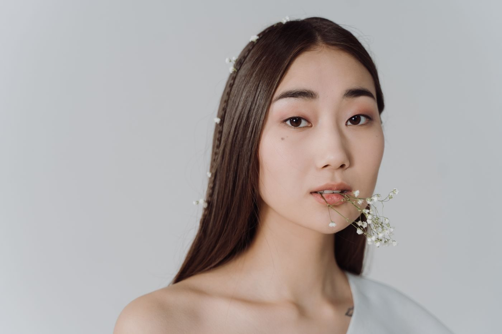

The Hyundai Seoul · 2F
서울의 랜드마크가,
곧 메이린의 주소
서울을 대표하는 백화점, 더현대 서울. 상담 전후 쇼핑과 식사가 한 지붕 아래에서 이어지고, 안내데스크에 물으면 바로 찾아옵니다.
MAYLIN · THE HYUNDAI SEOUL
메이린의원 더현대 서울점, 여의도 더현대 서울 2층에 있습니다.
실 리프팅, 보톡스·필러, 포텐자를 오욱 원장이 진료 후 조합합니다.
쇼핑, 식사, 진료를 같은 오후에 끝냅니다.

왜 메이린인가

The Hyundai Seoul · 2F
서울을 대표하는 백화점, 더현대 서울. 상담 전후 쇼핑과 식사가 한 지붕 아래에서 이어지고, 안내데스크에 물으면 바로 찾아옵니다.

전국 11개 지점
전국 11개 지점, 그중 5곳이 현대백화점, 1곳이 롯데호텔 안에 있습니다. 입점처의 까다로운 심사를 이미 통과했고, 어느 지점이든 같은 기준입니다.

카메라 앞에서 자연스럽게, 회복은 빠르게
티 나지 않을 만큼 자연스러운 것,
그것이 우리의 기준입니다.
카메라 앞에서 자연스러워야 하고, 회복은 빨라야 하며, 흔적이 남아선 안 됩니다. 연예인이 결과에 요구하는 기준은 당신과 다르지 않습니다 — 메이린이 거듭 선택받는 이유입니다.
May Lifting
May Lifting
시술 가능 여부·조합·횟수는 의사 진료 후 결정하며, 효과와 회복 기간은 개인차가 있습니다.
Focus on May

지하철로 바로 오는 백화점 2층. 쇼핑, 식사, 진료를 같은 오후에.

진료 후 방법과 비용을 확인한 뒤 시술합니다. 원화 결제.

예약 때 말씀해 주시면 미리 준비합니다.

희망 날짜와 관심 시술을 보내면 병원이 확인해 답합니다.
시술 후 궁금한 점은 예약 때 쓴 위챗으로 문의합니다.

Dr. Oh Wook
ICLAS 국제학회 위원장, 전 대한레이저피부모발학회(KALDAT) 회장. 실 리프팅, 주사, 레이저 피부치료 모두 원장이 직접 진료하고 설계합니다.
May Signature
이달의 이벤트
가격은 원내 고지가 기준이며, 시술 가능 여부는 의사 진료로 판단합니다. 이벤트는 매월 바뀝니다.
예약
QR로 추가한 뒤 희망 날짜, 관심 시술, 중국어 도움 필요 여부를 보내 주세요.
전화도 가능합니다:
월~목 10:30–20:00 · 금~일 10:30–20:30

QR을 길게 눌러 인식
메이린의원 위챗 추가
위챗 예약
QR을 길게 눌러 인식
메이린의원 위챗 추가
연락처를 남겨 주시면 저희가 연락드립니다.
위챗을 바로 추가하셔도 됩니다. 둘 다 괜찮습니다.
접수됐습니다. 감사합니다.
영업일 1일 안에 위챗이나 전화로 연락드립니다.
급하시면 위 QR을 길게 눌러 위챗을 바로 추가하세요.